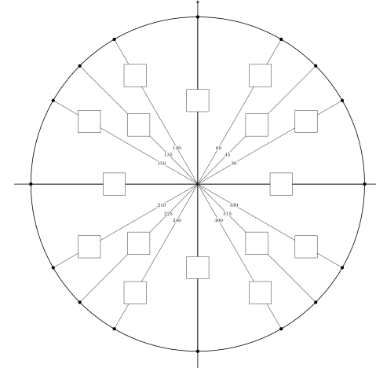

First find the length of the red line segment. How does this length relate to the \(x\)-coordinates of the two points?
Second find the length of the blue line segment. How does this length relate to the \(y\)-coordinates of the two points?
Third find the distance of the two points, namely the length of the green line segment. How does the distance of the two points relate to the \(x\) and the \(y\)-coordinates of the two points?
For any given two points \((x_1,y_1)\) and \((x_2,y_2)\text{,}\) find a formula that gives the distance of the two points.
A circle is a collection of points in the plane that are at a given distance, called the radius, from a given point, called the center. If we denote the radius by \(r\) and the center by \((h,k)\text{,}\) the set of points \((x,y)\) satisfies the formula
A circle has its center at \((-4,-8)\text{,}\) and just touches the \(y\)-axis (without crossing it).
Draw a diagram of the circle in the \(xy\)-plane.
Write the equation of the circle.
Find the circumference and area of the circle.
Task6.3.
A circle has its center at \((-6,-4)\text{,}\) and contains the point \((-1,8)\text{.}\)
Draw a diagram of the circle in the \(xy\)-plane.
Write the equation of the circle.
Find the circumference and area of the circle.
It is well-know that one of the way to measure angles is using degrees. One full rotation is \(360^{\circ}\text{,}\) half of a rotation is \(180^{\circ}\) and a right angle is \(90^{\circ}\text{.}\) We now introduce another unit to measure angles, called radian, that is based on the arc length cut by the angle, and the radius. Note that the circumference of the circle with radius \(1\) is equal to \(2\pi\) so we say that one full rotation is \(2\pi\) radian (or simply rad). Half of a rotation is \(\pi\) rad and a right is \(\frac{\pi}{2}\) rad.
Task6.4.
Convert the angles \(0^{\circ}, 30^{\circ}, 45^{\circ}, 60^{\circ}, 120^{\circ}, 135^{\circ}, 150^{\circ}\) to radians. Then develop a conversion formula between radian and degree.
An arc of a circle is a piece of a circle, and has length. A sector is a part of the plane enclosed by two radii and an arc of a circle, and has area.
Task6.5.
What is the length of the arc along a circle of radius \(7\) cut out by an angle of \(90^{\circ}\text{?}\)
What is the length of the arc along a circle of radius \(3\) cut out by an angle of \(45^{\circ}\text{?}\)
What is the length of the arc along a circle of radius \(5\) cut out by an angle of \(30^{\circ}\text{?}\)
Fill in the following table
Table6.6.Using radian to calculate arc length
Angle measured in degree
Angle measured in radian
Radius
Arc length
\(90^{\circ}\)
\(\)
\(7\)
\(\)
\(45^{\circ}\)
\(\)
\(3\)
\(\)
\(30^{\circ}\)
\(\)
\(5\)
\(\)
Then create a formula that calculates the length of an arc using the radian of the angle.
Task6.7.
What is the area of the sector cut out of a circle of radius \(7\) cut out by an angle of \(90^{\circ}\text{?}\)
What is the area of the sector cut out of a circle of radius \(3\) cut out by an angle of \(45^{\circ}\text{?}\)
What is the area of the sector cut out of a circle of radius \(5\) cut out by an angle of \(30^{\circ}\text{?}\)
Fill in the following table
Table6.8.Using radian to calculate sector area
Angle measured in degree
Angle measured in radian
Radius
Sector area
\(90^{\circ}\)
\(\)
\(7\)
\(\)
\(45^{\circ}\)
\(\)
\(3\)
\(\)
\(30^{\circ}\)
\(\)
\(5\)
\(\)
Then create a formula that calculates the area of a sector using the radian of the angle.
From now on, we will be using radian to measure angles unless otherwise specified. We now discuss the six trigonometric functions of angles between \(0\) and \(\frac{\pi}{2}\) in the right triangles. After that we will discuss trigonometric functions for any angles.
Figure6.9.
Using the lengths of these three sides, you can form six ratios that define the six trigonometric functions of the angle \(\alpha\text{.}\)
Note that \(0 \lt \alpha \lt \frac{\pi}{2}\) and the definitions below do not work angles that are outside of this range. We use the following abbrevations: opp for the length of the side opposite to \(\alpha\text{,}\) adj for the length of the side adjacent to \(\alpha\text{,}\) hyp for the length of the hypotenuse.
Suppose that \(\Delta DEF\) is a right triangle, with right angle at \(E\text{.}\) Let \(DF=4\) and \(EF=2\text{.}\) Determine \(DE\) and then use the side lengths to compute \(\sin(\angle EDF), \cos(\angle EDF), \tan(\angle EDF), \cot(\angle EDF), \sec(\angle EDF), \csc(\angle EDF)\text{.}\)
Task6.11.
Find the values of \(\displaystyle \sin(\frac{\pi}{4}), \cos(\frac{\pi}{4}), \tan(\frac{\pi}{4}), \cot(\frac{\pi}{4}), \sec(\frac{\pi}{4}), \csc(\frac{\pi}{4})\text{.}\) Compute
Find the six trigonometric values of \(\displaystyle \frac{\pi}{6}\) and \(\displaystyle \frac{\pi}{3}\text{.}\) Then compute the same trigonometric expressions in Task 6.11 for \(\displaystyle \frac{\pi}{6}\) and \(\displaystyle \frac{\pi}{3}\text{.}\) (Hint: You need to first figure out the length of \(BD\text{.}\))Figure6.14.
Task6.15.
A surveyor stands \(115\) feet from the base of the Washington Monument. The surveyor measures the angle of elevation to the top of the monument to be \(78.3^{\circ}\text{.}\) How tall is the Washington Monument?
Task6.16.
Figure Figure 6.17 is a skateboard ramp. Find the length \(c\) and the height \(b\text{.}\)Figure6.17.
Now we know how to define trigonometric functions for angles between \(0\) and \(\frac{\pi}{2}\text{,}\) what about angles larger than \(\frac{\pi}{2}\text{?}\) In order to do that, we need to use the unit circle.
Figure6.18.
Task6.19.
Let \((x,y)\) be a point on the unit circle and let \(\alpha\) be the angle formed by the positive \(x\)-axis and the line that connects the origin and the point \((x,y)\text{.}\) Find a formula that express \(x\) and \(y\) using trigonometric functions of \(\alpha\text{.}\) (Hint: Notice that the radius of the circle is \(1\text{.}\))
First fill in the box with the measure of angle in radian.
Second using the answers of Task 6.11 and Task 6.13 to figure out the coordinate of the points of \(30^{\circ}, 45^{\circ}\) and \(60^{\circ}\text{.}\)
Third using properties of symmetry to figure out the coordinate of the points of \(120^{\circ}, 135^{\circ}\) and \(150^{\circ}\text{.}\)
Fourth using the same idea as in the last question to figure out the rest of the coordinates in the unit circle.

Figure6.21.
Task6.22.
Use your answer in Task Figure 6.21 to fill in the following table.